WHAT'S NEW IN AVENGERLAND
2012
Rough Notes – for now
THE NEW
AVENGERS: Obsession
(Ernest Day: Spring 1977)
F42: Springwell Chalk Pit, Springwell Lane, Harefield
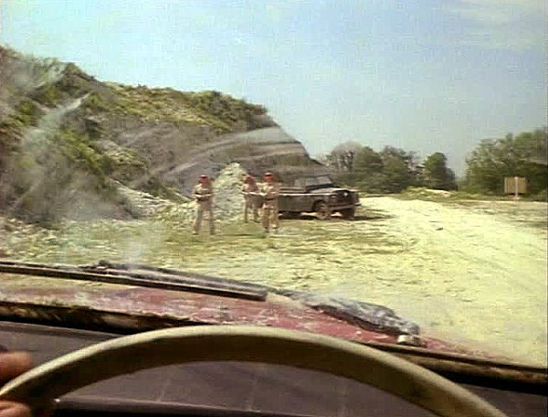 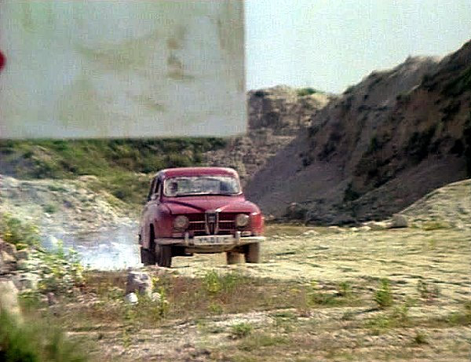
31st December - Peter Astaire -
THE NEW
AVENGERS: Sleeper (Graeme
Clifford: September 1976)
Roland Gardens SW7 –


29th Decenber - Mike Richardson –
THE AVENGERS:
Return of the Cybernauts
(Robert Day: May 1967)
N35: Tykes Water Lake, Bridge and approach road, Aldenham Park

DEPARTMENT S:
The Shift That Never
Was (John Gilling:
Autumn 1968)
Hams Hall Power Stations, Warkickshire
(demolished) - Establishing shots of Northover Atomic Power Station.


RANDALL AND
HOPKIRK [DECEASED]: Could You Recognise the Man Again? (Jeremy
Summers: April 1969)
Whitehall - Jeff and Jeane race through London in order to get to the
court in time fro Jeff to give his wintess statement (back projection).
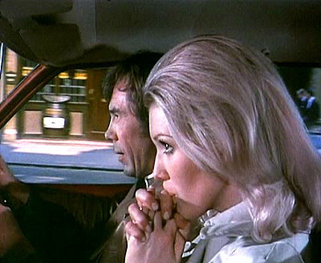
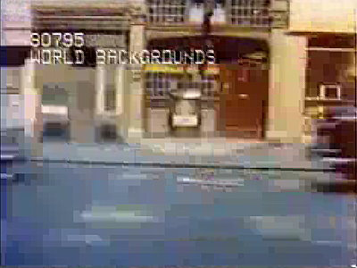


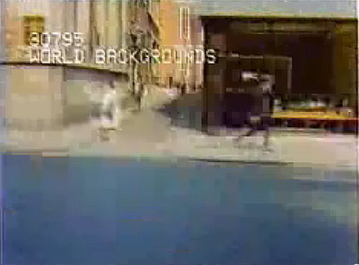
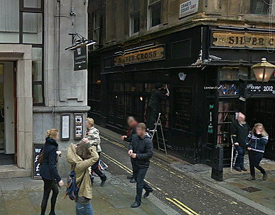
Mark Pond
THE NEW AVENGERS: Angles of Death
South Bucks District Council offices, Windsor Road, Slough – The Ministry Building, The council offices were demolished in mid 2000 prob around 2005.
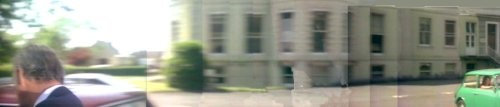
THE PERSUADERS!: The Morning After (Leslie Norman: 1971)
Lars Seelman is kidnapped by Kristen and Jon and onto a airfield where a Cessna aeroplane is waiting for them.
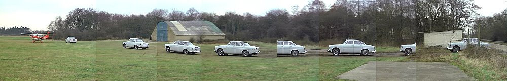
The field opposite Denham Aerodrome (end of the runway 24…. building is in the woods to the right looks like the old one has gone but that is the same location…the hanger was used in producing fairthorpe cars in the 70s
Alan Hayes
THE AVENGERS: The Frighteners ()
Berwick Street Market

Coventry Street W1

Shaftesbury Avenue W1

Mike Richardson -
THE NEW AVENGERS: K is for Kill pt1 + py2
Red Square
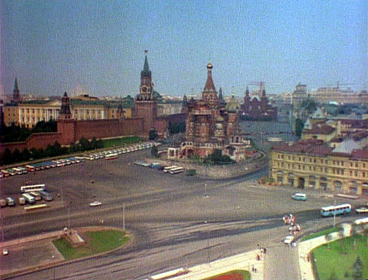
THE NEW AVENGERS: K is for Kill pt1
Swayambhunath stupa in Nepal
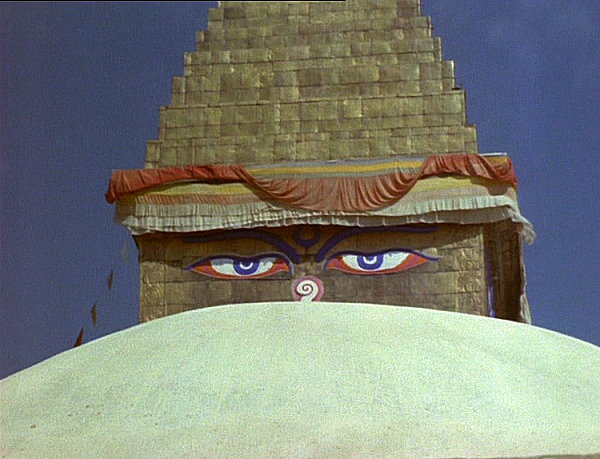
Avenue de Friedland

Avenue Hoche/Avenue de Friedland

Junction of Avenue Pierre 1er de Serbie and Impasse du Docteur Jacques Bertillon.

Impasse du Docteur Jacques Bertillon - Embassy guard held Purdey at gunpoint was on, note the barrier at the end of the street.

George V/ of Avenue Pierre 1er de Serbie
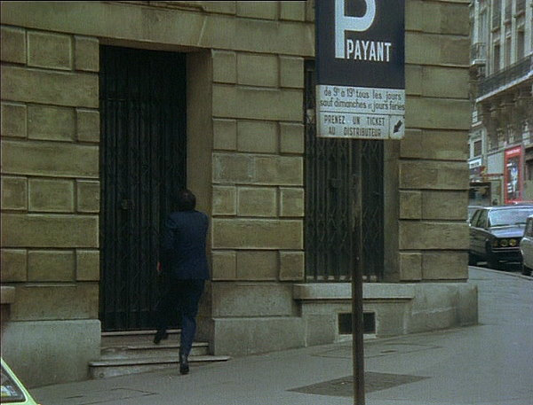
THE NEW AVENGERS: Sleeper
Waterloo Place, London
THE NEW
AVENGERS: Angels of Death (Ernest day: Summer 1977)
Red Cow Roundabout/Castle Street/Mere
Road Slough - Steed (Patrick Macnee)
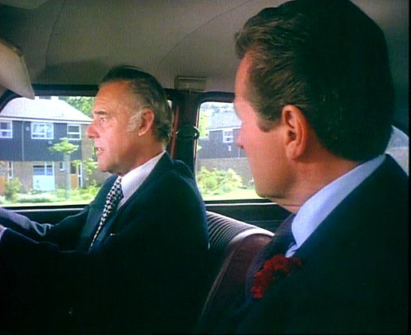
THE NEW
AVENGERS: Obsession
(Ernest Day: Spring 1977)
RAF Lossiemouth
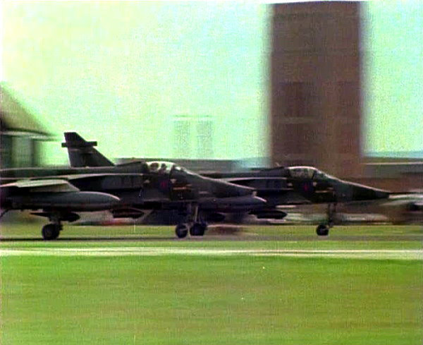
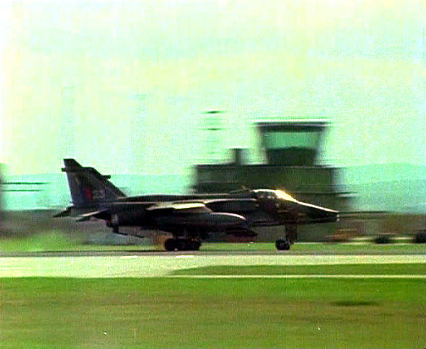
THE NEW
AVENGERS: Obsession
(Ernest Day: Spring 1977)
Glen Coe, Scotland
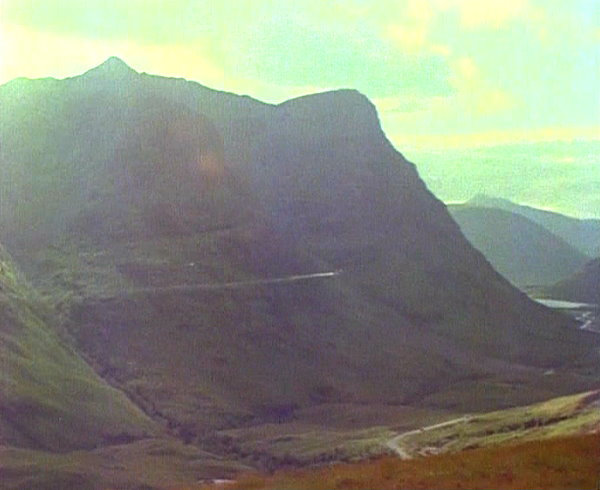
THE NEW
AVENGERS: Obsession
(Ernest Day: Spring 1977)
Northolt Aerodrome
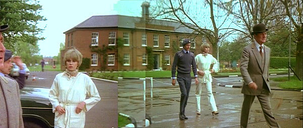
THE NEW AVENGERS: Obsession (Ernest Day: Spring 1977)
Sevenhills Road, near Pinewood Studios
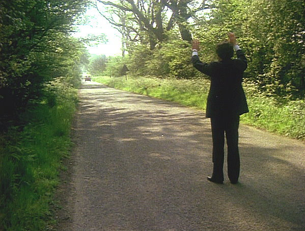
THE NEW AVENGERS: Emily (Don Thompson: September/October 1977)
Woodbridge, City of Vaughn, Ontario, Canada
124 Woodbridge Avenue
Steed, Gambit, Purdey and Phillips (Richard Davidson) go in search of
Emily’s owner Miss Daly (Jane Mallet). They find her outside a
florist’s shop (the shop building exists, but the modern frontage has
been removed).
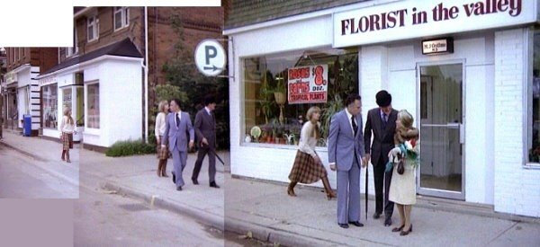
137 Woodbridge Avenue
Steed, Gambit and Purdey go to give the sad news about Emily to Miss
Daly (Jane Mallet).
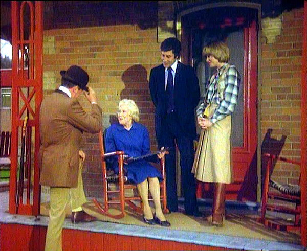
119 Woodbridge Avenue (demolished):
Steed, Gambit, Purdey and Phillips (Richard Davidson) go in search of
Emily’s owner Miss Daly (Jane Mallet). They find her, manage to save
Emily’s fingerprints from the carwash and requisition the car
(173 Woodbridge Avenue, Miss Daly’s home, can be seen as the car leaves
the car wash).

THE AVENGERS:
The Bird Who Knew Too
Much (Roy Rossotti: October 1966)
Stewarts Drive/Dukes Drive/Egypt Lane, Burnham Beeches -
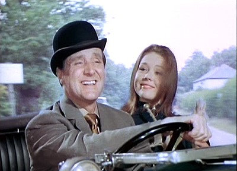
THE SAINT:
Little Girl Lost
Stewarts Drive/Dukes Drive/Egypt Lane, Burnham Beeches -
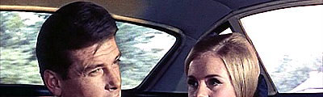
THE AVENGERS:
Murdersville
(Robert Asher: August 1967)
Stewarts Drive/Dukes Drive/Egypt Lane, Burnham Beeches -
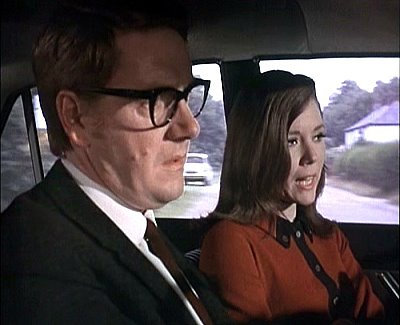
THE NEW AVENGERS: To Catch A Rat (James Hill: Summer 1976)
Alan Field, 26th October 2012 - Bank Lane SW15, outside the Bank of England sports ground.
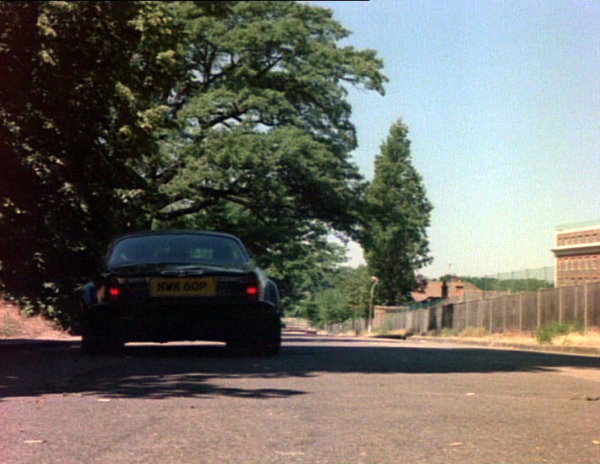
THE NEW AVENGERS: Angels of Death (Ernest day: Summer 1977)
Mike Richardson - Two flashbacks - Target! with footage at Pinewood Sanatorium and Dirtier by the Dozen with footage shot at Longmore Camp.
THE NEW AVENGERS: The Three Handed Game (Ray Austin: 1976)
Mike Richardson - Brooklyn Bridge - New York, The White House - Washington DC


THE NEW AVENGERS: Tale of the Big Why (Robert Fuest: Auguet 1976)
Chris Bentley, John Hough - junction of West End Lane/Watersplash Lane and The Splash at Warfield in Berks.
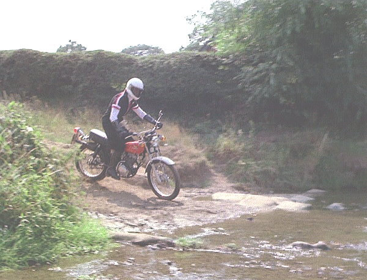
THE NEW AVENGERS: House Of Cards (Ray Austin: Spring 1976)
Mike Richardson - Army assault course in this episode was in Aldershot,
THE NEW AVENGERS: The Lion And The Unicorn (Ray Austin: 1977)
Mike Richardson - The Moulin Rouge, No 82 Boulevard de Clichy, Paris.
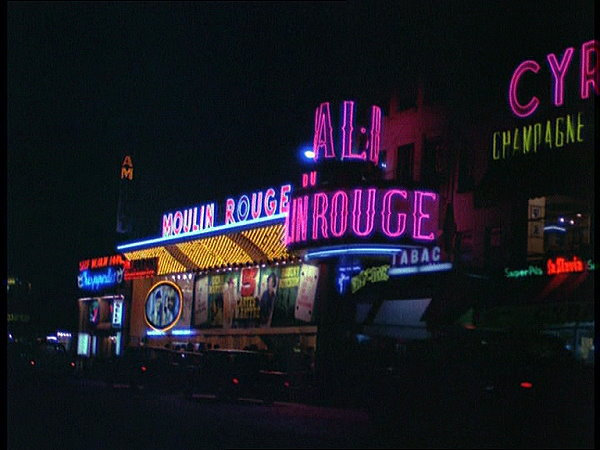
THE NEW AVENGERS: Eagles Nest – gates to Alderbourn Arches
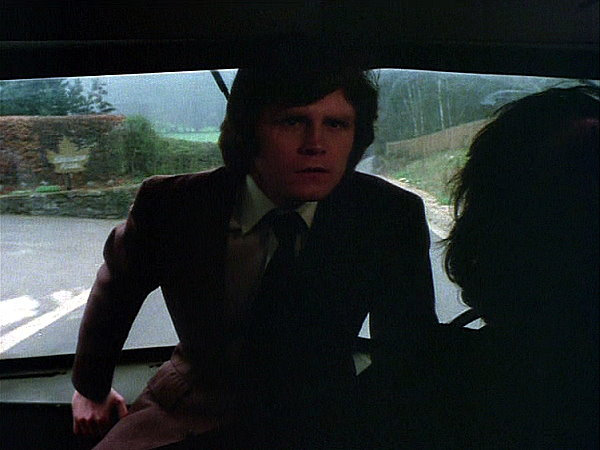
THE NEW AVENGERS: Faces (Ray Austin: July 1976)
Mike Richardson - Binfield Manor, Binfield, nr. Bracknell. Berkshire
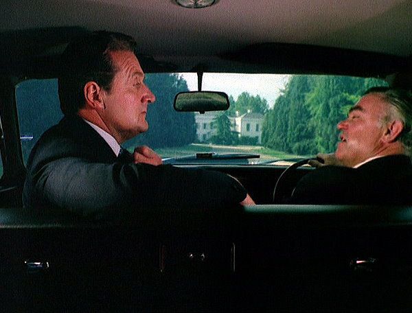
THE NEW AVENGERS: Sleeper (Graeme Clifford: September 1976)
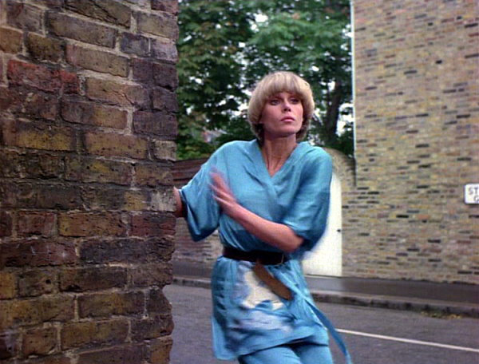
This is the underpass that goes under the railway lines from Spencer Street, Ealing to The Straight at Southall
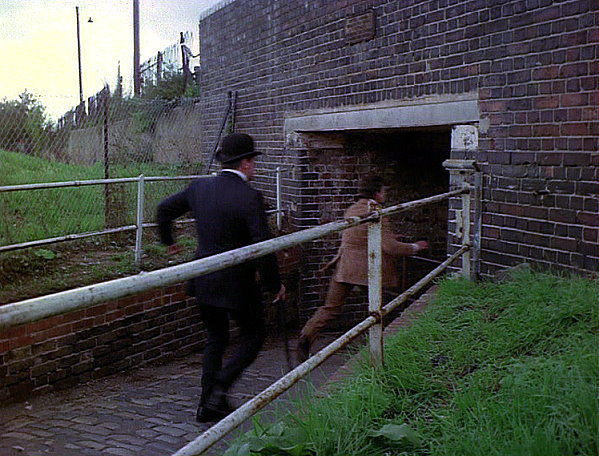
Lots of THE ZOO GANG from Paul Stroud
20th November –Vince Cox
RANDALL AND
HOPKIRK [DECEASED]: But What a Sweet Little Room
(Roy Ward Baker: June 1968)
P1:
Grim's Dyke Hotel, Old Redding, Harrow Weald:
Arthur de Crecy drives Anne Fenwick to his 'cottage in the country' in
his Peugeot (back projection of driveway).

RANDALL AND HOPKIRK
[DECEASED]: The Smile Behind the Veil (Jeremy
Summers: Autumn 1968)
O6:
Rowley Lane, Borehamwood - After escaping Donald
flags down a lift only to find Cynthia driving.
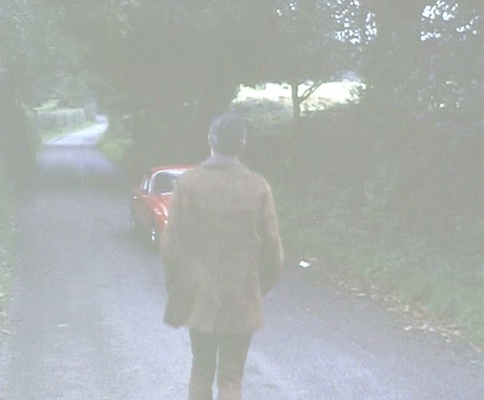
31st October – Identified by Controller.
GIDEON’S WAY:
The Tin God
(John Gilling: June/July 1964)
(Identified by Controller)


THE NEW
AVENGERS: The
Eagle's Nest (Desmond Davis: April 1976)
Kyleakin,
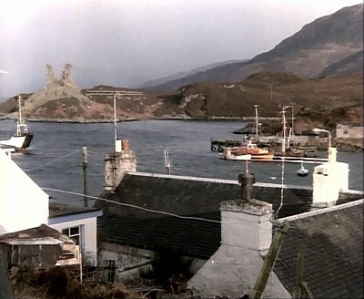
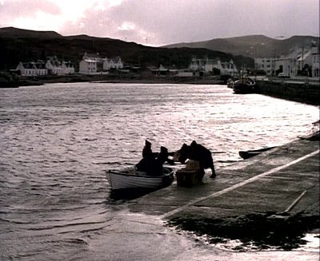
Milton, Applecross,
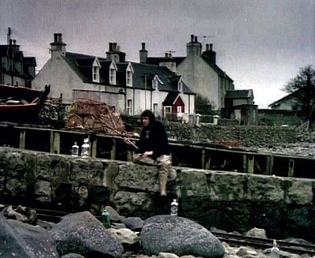

Camustiel, Applecross,
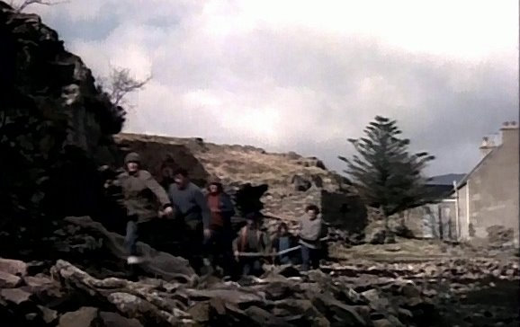

11th October -
RANDALL AND
HOPKIRK [DECEASED]:The Trouble with Women
(Cyril Frankel: October 1968)
Harley
Street, W1 - Jeff and Marty park opposite Raebarn
House to observe Lang and his mistress. They both duck down inside the
Mini to hide from Lang (93 Harley Street can be seen through the window
of the Mini).
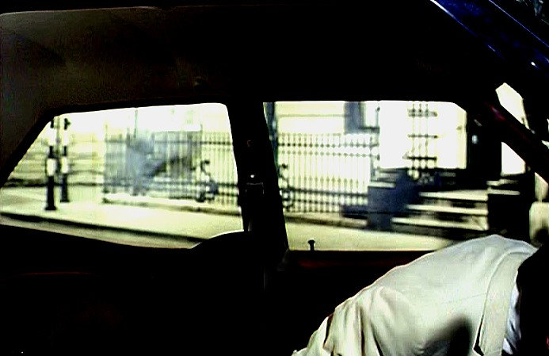
10th October - A
number of locations from one short sequence; Jenny Firston's news
report in the THE
AVENGERS: The
Morning After. Alan Field
started the ball rolling with his idenitfication of footage shot in
Special thanks to Sam Denham who identified the footage as coming from the 1950 film SEVEN DAYS TO NOON. Which just proves the adage that you learn something new everyday.
THE AVENGERS:
The Morning After
(John Hough: October 1968)
A40
between Gibbon Road and Perryn Road, East Acton, W3
- John Steed and Marlin are shown a recording of Jenny Firston's news
report of people are pouring out in their thousands as a typical
English town is evacuated, as they leave special shock troops take
over. Coaches carrying evacuated townsfolk drive along both sides of a
dual carriageway out of a typical English town (A40 between
(Identified by Alan Field, September 2012)
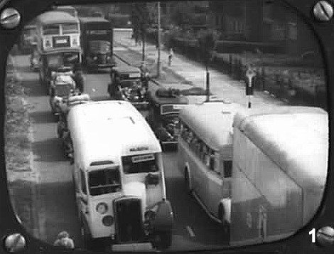
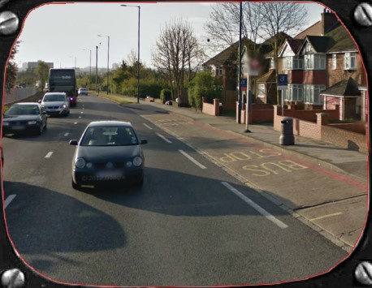
THE AVENGERS:
The Morning After
(John Hough: October 1968)
Friary
Road/Friars Way, Acton, W3 - John Steed and Marlin
are shown a recording of Jenny Firston's news report of people are
pouring out in their thousands as a typical English town is evacuated,
as they leave special shock troops take over. Coaches carrying
evacuated townsfolk drive through a typical English town.
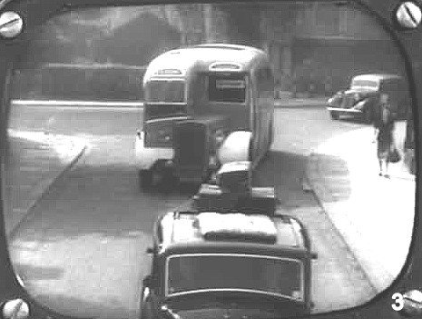
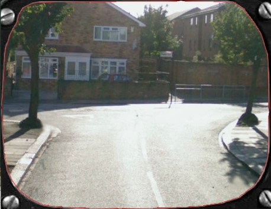
THE AVENGERS:
The Morning After
(John Hough: October 1968)
St
John's Gardens, Notting Hill, W11 - John Steed and
Marlin are shown a recording of Jenny Firston's news report of people
are pouring out in their thousands as a typical English town is
evacuated, as they leave special shock troops take over. Trucks
carrying shock troops arrive in a typical English town.
(S.J. on the Reel Streets site, April 2011)
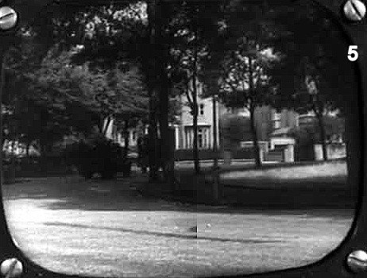
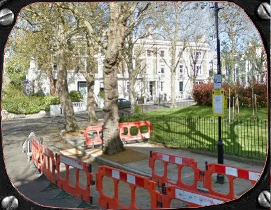
THE AVENGERS:
The Morning After
(John Hough: October 1968)
The
Boltons, SW7 - John Steed and Marlin are shown a
recording of Jenny Firston's news report of people are pouring out in
their thousands as a typical English town is evacuated, as they leave
special shock troops take over. Shock troops leave their vehicle and
start to patrol a typical English town.
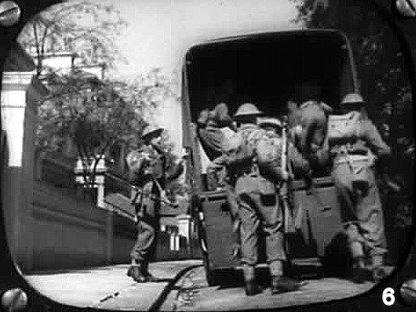
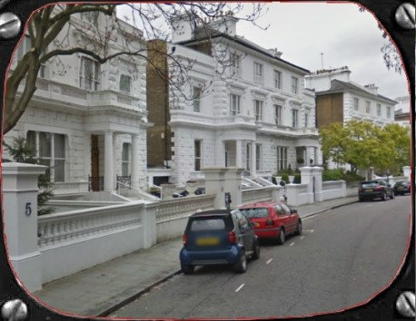
1st October - Rhett Burns has written in as he recognises this location as the road he used to walk to school each day around the time this episode of RANDALL AND HOPKIRK [DECEASED] was filmed. Without this local knowledge I doubt this location would have been found. Many thanks also for the photograph Rhett sent in confirming the find.
RANDALL AND
HOPKIRK [DECEASED]: The House on Haunted Hill
(Ray Austin: April 1969)
K11:
Blackhorse Lane, South Mimms - Jeff and Marty leave
the Merston Manor in the Vauxhall at the end of the episode.

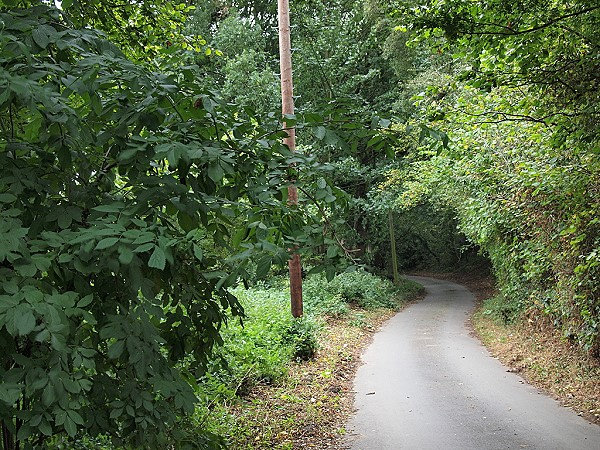
26th September - Very many thanks to Steve Cann for at last revealing the location of the brickworks in The Tale of the Big Why. Steve has also provided a photograph of the brickworks to confirm the identification.
THE NEW
AVENGERS: The
Tale of the Big Why
E14:
Malders Lane brickworks, Pinkneys Green, Berkshire
(redeveloped) - After leaving the prison, Bert Brandon (George A.
Cooper), drives to a deserted brickworks. Purdey (Joanna Lumley) is
close behind him on her motorbike, but does not arrive soon enough to
prevent

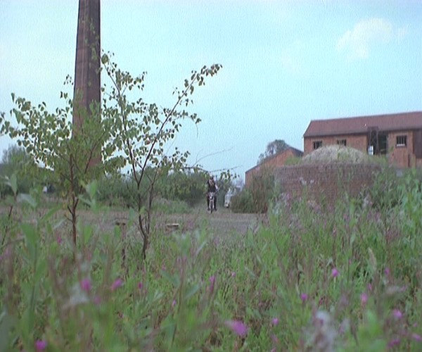
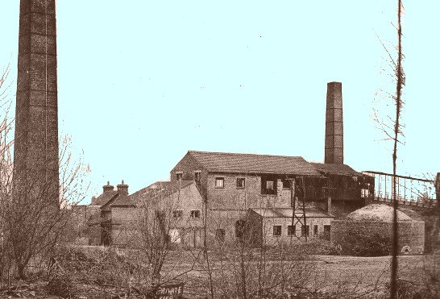
16th September - Identified by Michael Richardson
THE AVENGERS:
The Curious Case of
the Countless Clues (Don Sharp: January 1968)
D1:
Woolmers Park, Essendon Road, Letty Green - Steed
races back to
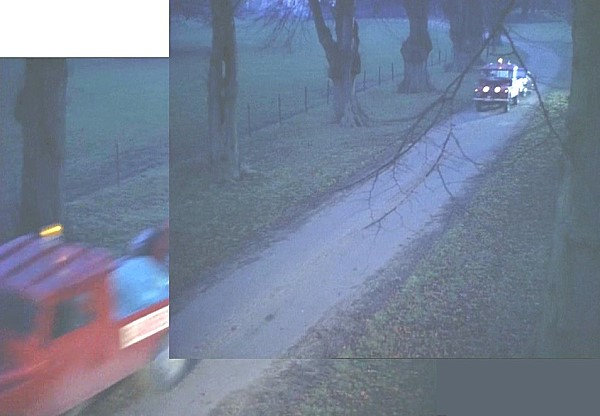
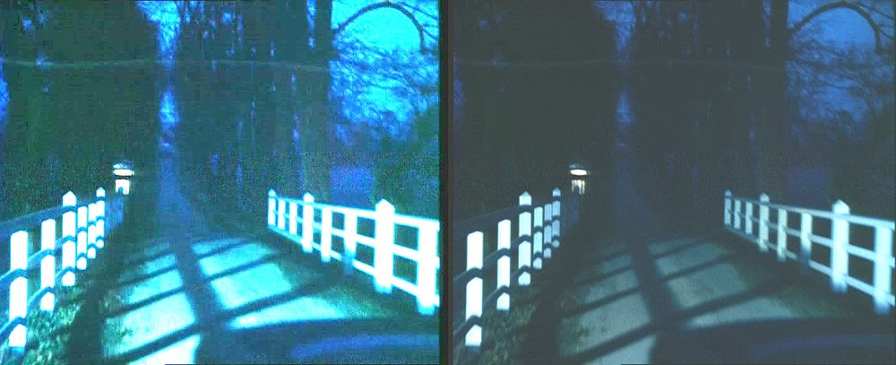
15th September -
THE AVENGERS:
Death's Door
(Sidney Hayers: June 1967)

10th September
THE SAINT:
Legacy for the Saint
(Roy Ward Baker: Spring 1968)
Hampstead
Cemetery, Fortune Green Road, NW6 - An 1962
Cadillac Fleetwood 75 arrives at the cemetery for Ed Brown's burial.
Tony (T.P. McKenna), Pietro (Edward Brayshaw), Mark (Bruce Boa) and
Dickie (Brian Coburn) get out to pay their respects.
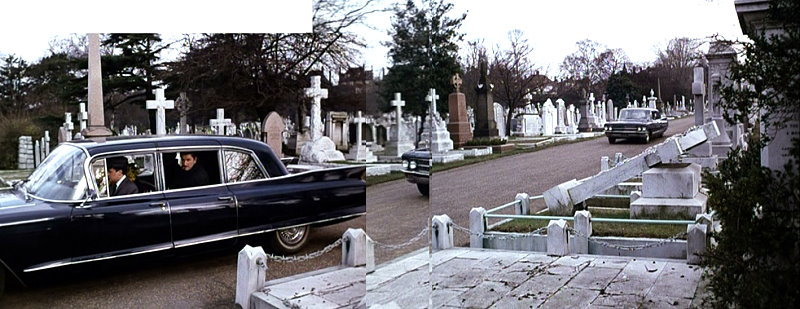
9th September - Michael Richardson has again been asking the right question as well as providing some answers. Thanks also to Alan Field.
THE AVENGERS: Bizarre (Leslie Norman: February 1969)
Weymouth
Mews, W1 - Shaw is walking with Steed and suddenly
pushes him in front of an on-comingcar.
(Idenified by Michael Richardson, September 2012)
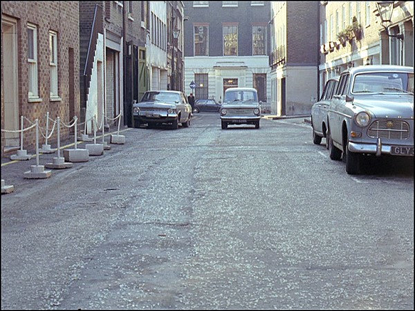
THE AVENGERS: Bizarre (Leslie Norman: February 1969)
Cape
Canaveral, Launch Complex 14, Brevard County, Florida, United States of
America - Steed has built a rocket (an Atlas SLV-3)
from a kit in his backyard which is launched accidentally by
THE AVENGERS: False Witness (Charles Crichton: June 1968)
Q23:
Warren Lane, Stanmore - Steed (Patrick
Macnee) drives Melville (Barry Warren) in
his Yellow Rolls to a wood. He parks the car, then proceeds to thrash
Melville for not warning him about the the man entering the apartment
he had just searched.
(Idenified by Alan Field, September 2012)
7th September - Thanks to Michael Richardson asking all the right questions these THE AVENGERS locations have been found.
THE AVENGERS: All Done with Mirrors (Ray Austin: May 1968)
N35:
Tykes Water Lake, Bridge and approach road, Aldenham Park, Elstree
- Roger (John Bown), one of Mothers' men in an MGB tails Arkin (Peter
Elliott) driving a MG 110 to a secluded wood south of The
Establishment. He reports to Mother by radio. Arkin appers to be
talking to someone, but he is unable to see anyone in the immediate
area. Later Watney (Dinsdale Landen) follows Doctor Dr Seligman
(Anthony Dutton) to the same location. After Seligman is shot Major
Sparshott (Peter Copley) appears nearby.


THE AVENGERS: Take-Over (Robert Fuest: February 1969)
N35:
Tykes Water Lake, Bridge and approach road, Aldenham Park, Elstree
- Fenton Grenville (Tom Adams), John Steed (Patrick
Macnee) and Bill Basset (Michael Gwynn) arrive for their shoot in a
Land Rover. Gilbert Sexton (Garfield Morgan) and Ernest Lomax (Keith Buckley)
get out of the back of the Land Rover with their guns to act as
beaters. An attempt is made to kill Steed, but he is able to trick his
would-be executioners into thinking he is dead.
THE AVENGERS: Requiem (Don Chaffey: January 1969)
M23:
Hilfield Lane, Borehamwood - Major Firth (John
Cairney), Lieutenant Barrett (Mike Lewin) and Rista (Terence Sewards)
search for Steeds hideout near
THE AVENGERS: Requiem (Don Chaffey: January 1969)
Q3:
The Rise, Borehamwood - After
Mother's funeral Tara (Linda Thorson), Major Firth (John Cairney)
and the Jill (Kathja Wyeth) a nurse drive the a hearse to the home of
Steed's friend Cleaver (Harvey Ashby). Murray (Denis Shaw) and Rista (Terence Sewards)leave
the house and drive off in the van just as the hurse arrives. Firth
goes to the house (25 The Rise) but when Bobby Cleaver (Harvey Ashby)
opens the door he collapses and dies.
THE AVENGERS: Requiem (Don Chaffey: January 1969)
N33:
Aldenham Road, Elstree - Following Tara's clue
about Steed having told her he lived near Henley, Firth concentrates
his search around this town on the Thames (Aldenham reservoir).
30th August - Two newly found locations, and more detail on the one we had, for Mother's double decker bus route from THE AVENGERS: False Witness .
THE AVENGERS: False Witness (Charles Crichton: June 1968)
J18
Bell Lane, London Colney - Melville (Barry Warren)
climbs the stairs of Mother's (Patrick Newell) double decker bus HQ and
arrives on the top deck. Steed (Patrick Macnee), Mother and Rhonda
(Rhonda Parker) are there to listen to his report. Later, Steed
discusses Melville with Mother. Mother suggests Steed doubles up with
Melville in order to find out why he is lying. After Steed has left the
bus tara (Linda Thorson) takes a drink from Rhonda and gives it to
Mother. Mother suggests
(Identified by Alan Field on the Britmovie Forum, August 2012)
THE AVENGERS: False Witness (Charles Crichton: June 1968)
N56:
Cowley Hill, Borehamwood - Steed (Patrick Macnee)
is reading the report on the top deck of Mother's (Patrick Newell)
mobile headquarters, Mother and Rhonda (Rhonda Parker) watch on. As
Steed is about to leave the bus Mother warns him that "there is
something very odd about this case" (the bus slows to a stop at the
junction with
THE AVENGERS: False Witness (Charles Crichton: June 1968)
N44:
Hartforde Road, Borehamwood - Steed (Patrick
Macnee) arrives at the rendezvous in his Yellow Rolls Royce and uses a
portable bus stop to catch a double-decker bus being used by Mother
(Patrick Newell) as his mobile headquarters (opposite Braken Close).
Steed climbs the stairs and asks Rhonda (Rhonda Parker) for a drink
from the bar before talking to Mother (the bus then drives up and down
(Identified by Sam Denham)
21st
August - Good
to hear from Geoff Dodd again with a simple DEPARTMENT S location in a nice corner of
DEPARTMENT S: A Cellar Full of Silence (John Gilling: June 1968)
(Identified by Geoff Dodd, August 2012)

Mike Richarson with the help of the guys on the Britmovie Forum has been idenifing quite a few THE AVENGERS locations recently.
THE AVENGERS: Killer (Cliff Owen: September 1968)
N35:
Tykes Water Lake, Bridge and approach road, Aldenham Park, Elstree
- Lawson's body is dropped by a helicopter.
(Identified by Mike Richardson, August 2012)

Compare the image from Killer with one from You Have Just Been Murdered.
THE AVENGERS: The Rotters (Robert Fuest: September 1968)
H72:
Junction of East Burnham Lane and Stoney Lane, East Burnham
Tara pursues Sawbone's MGB in her Lotus Europa along a flooded road and
into a small hamlet
THE AVENGERS: Killer (Cliff Owen: September 1968)
F2:
Burnham Beeches, Burnham - After leaving The Pirate
armed with a shotgun Brinstead (William Franklyn) races of to the woods
and waits in ambush for Steed (Patrick Macnee) and Lady Diana
Forbes-Blakeney (Jennifer Croxton) when they arrive. After Brinstead
shoots at them they fight back using a convenient dog cart. Later Lady
Diana follows a bus from the factory to the woods in her M.G. where it
stops. Diana investigates the bus cautiously, but when she finds it
full of dummies she fails to notice Paxton (Harry Towb) before he jumps
her.
(Identified by Mike Richardson, August 2012)
THE AVENGERS: False Witness (Charles Crichton: June 1968)
N34:
Home Farm, Aldenham Road, Elstree - Steed (Patrick
Macnee) takes Melville (Barry Warren)
to undergo a lie detector test inside Mother's (Patrick Newell) double
decker bus HQ conducted by Dr. Grant (Arthur Pentelow) and observed by Rhonda
(Rhonda Parker). Later an
analysis report on the milk arrives back at Mother's HQ. The bus sets
off (from Home Farm on to
(Identified by Mike Richardson, August 2012)
THE AVENGERS: False Witness (Charles Crichton: June 1968)
N33:
Aldenham Road, Elstree - Steed (Patrick
Macnee) gets off
Mother's double-decker bus and gets into his Yellow Rolls which is
parked on
THE AVENGERS: False Witness (Charles Crichton: June 1968)
Detail of the route takes as Tara (Linda Thorson) follows the milkfloat
in her Lotus Europa from Plummer's apartment:
Wilton
Place, SW1 - As Tara follows the milk float from Plummer's
apartmentin her Lotus
Europa, the mikman, Lane (
(Identified by Mike Richardson, August 2012)
Belgrave
Square, SW1 -
(Identified by Mike Richardson, August 2012)
Wilton
Crescent, SW1 - Tara (Linda Thorson) watches
Lane make the dellivery to the home of Sir Joseph Tarlton then follows
the milkfloat followed in her Lotus Europa (off
(Identified by Mike Richardson, August 2012)
THE AVENGERS: Legacy of Death (Don Chaffey: July 1968)
M14:
The Battleaxes, Aldenham Road/Butterfly Lane, Elstree
-
(Identified by Sam Denham, confirmed by Geoff Dodd, August 2012)

THE AVENGERS: Legacy of Death (Don Chaffey: July 1968)
Belsize
Park Gardens, NW3 - After his call to
Tara's flat is interupted, Steed races round to Tara's flat in his
yellow Rolls (Belsize Park Gardens looking towards the Lambolle Place).
(Suggested by Geoff Dodd with help from Tavistock and Sam Denham on the
Britmovie forum, August 2012)

RANDALL AND
HOPKIRK [DECEASED]: A Sentimental Journey (Leslie Norman: July 1968)
Glasgow,
Scotland - Jeff arrives at a
3rd August - After a long absence Marishka von Saatz has retuned with a number of hard to find locations. She has also provided a number of clarifications and suggestions.
GIDEON’S WAY: The Firebug (Roy Baker: September 1964)
Golborne
Road, W10 - Gideon and Keen back on the trail of
Tom Bishop again (back projection featuring the Golborne Grove at the

THE SAINT: The Smart Detective (John Moxey: February 1965)
Knightsbridge,
SW1 - The Volvo, with Simon and Janice Dixon aboard
is being hotly pursued by Swann and Miller’s car (Knightsbridge across
the junction with Albert Gate).

THE SAINT: The Elusive Ellshaw (John Moxey: 1963)
Stanhope
Mews West, SW7 - Simon and Anne go to 11 Duchess
Place as no one answers the door Simon Goes round the back to break in
(the alley up the side of the Stanhope Arms pub in Gloucester Road. The
alley is no longer open to the public).

2nd August -
THE
PERSUADERS!:The Gold Napoleon (Roy Ward Baker: 1970)
D22
above the town of La Peille, Alpes-Maritimes, Provence-Alpes-Côte
d'Azur, France -
THE PERSUADERS!:Nuisance Value
(Leslie Norman: 1971)
D22
above the town of La Peille, Alpes-Maritimes, Provence-Alpes-Côte
d'Azur, France -
THE PERSUADERS!:Nuisance Value
(Leslie Norman: 1971)
Pen-y-Gwryd,
A498 nr.Snowdon, Gwynedd -
1st August - THE PERSUADERS!: Powerswitch finds based on work by Pierre Alfonsi and 'Trinity'.
THE
PERSUADERS!:
Powerswitch (Basil Dearden, June 1970)
D22
above the town of La Peille, Alpes-Maritimes, Provence-Alpes-Côte
d'Azur, France - Brett and Pico drive the side road
where Julie's car had its accident (back projection, reversed).

THE
PERSUADERS!:
Powerswitch (Basil Dearden, June 1970)
Route
du Mont-Chauve, Tourrette-Levens, Provence-Alpes-Côte d'Azur, France
- Brett and Pico drive to the side road where Julie's car had its
accident.

THE
PERSUADERS!:
Powerswitch (Basil Dearden, June 1970)
Route
de la Revere/Route de l'Adret, Èze, Provence-Alpes-Côte d'Azur, France
- Brett and Pico drive to the side road where Julie's car had its
accident.

31st July - More detail of the French PERSUADERS! finds made by Pierre Alfonsi:
THE
PERSUADERS!:
Five
Miles To Midnight (Val Guest: 1970)
D22
above the town of La Peille, Alpes-Maritimes, Provence-Alpes-Côte
d'Azur, France - While Danny drives
the Citroen van with Sidonie and Frank Rocco aboard through Italy to
their meeting place Sidonie takes photos of Danny (Back projection,
reversed, inside van). Later, the van overheats and Danny (Tony Curtis)
stops by a local taverna. Sidonie (Joan Collins) gets out and the ask
the owner for water and food. Danny warns Frank Rocco (Robert
Hutton) to stay in the van. As they climb the hill they are shot at by


THE
PERSUADERS!:
Five
Miles To Midnight (Val Guest: 1970)
Route
du Mont-Chauve, Tourrette-Levens, Provence-Alpes-Côte d'Azur, France
- While Danny drives the Citroen with Sidonie and Frank Rocco aboard
through Italy to their meeting place Sidonietakes photos of Danny.
Later, after escaping from


THE
PERSUADERS!: Angie... Angie (Val Guest, June 1970)
Route
du Mont-Chauve, Tourrette-Levens, Provence-Alpes-Côte d'Azur, France
- Angie drives up the hilll to Mont-Chauve for a meeting with his
employer. Later Angie watches as Danny climbs the hill in his Dino.
24th July - More research fromPierre Alfonsi:
DEPARTMENT S: The Trojan Tanker (Ray Austin: June1968)
(Idenified by Pierre Alfonsi, July 2012)

RETURN OF THE
SAINT:
The
Diplomat's Daughter (Charles Crichton: 1978)
Avenue
des Platanes, Laroque, Hérault, Languedoc-Roussillon,
(Idenified by Pierre Alfonsi, July 2012)
THE PROTECTORS: Disappearing Trick (Jeremy Summers: Summer 1971)
Avenue
Foch and Avenue Raymond Poincaré Paris: The
Contessa drives her car into an underground car park to exchange it for
another.
(Idenified by Pierre Alfonsi, July 2012)

THE PROTECTORS::Your Witness (Jeremy Summers: Summer 1971)
1
Rue du Fauconnier, Paris, Île-de-France: In order
to avoid being followed, to Paul’s flat Harry arranges for
(Idenified by Pierre Alfonsi, July 2012)

THE PROTECTORS::Your Witness (Jeremy Summers: Summer 1971)
Rue
de l'Hôtel de Ville, Paris, Île-de-France: In order
to avoid being followed, to Paul’s flat Harry arranges for
(Idenified by Pierre Alfonsi, July 2012)


THE PROTECTORS: One and One Make One (Don Chaffey: Summer 1971)
Quai d’Anjou on Ile St. Louis, Paris: The Contessa (Nyree Dawn Porter)
attempts to rescue (after crossing Pont de Sully) Bennet who
is being held in a house on the Rue de Leglise. Later, after Harry
(Robert Vaughn) and The Contessa (Nyree Dawn Porter) and Paul (Tony
Anholt) flee the house in the Rolls, Yanos (Antony Stamboulie) is left
to watch and he follows Kramer (Christopher Dunham) as he leaves.
(Confirmed by Pierre Alfonsi, July 2012)

17th July - Another bag of excellent finds by Pierre Alfonsi:
DEPARTMENT S: Dead Men Die Twice (Ray Austin: 1968)
Hôtel
de Miramion, 47, quai de la Tournelle, Paris, France:
After his death Stanley Reeves is taken to the
(Identified by Pierre Alfonsi, June, 2012)

THE
PERSUADERS!: The Old, the New and the Deadly
(Leslie Norman, 1971)
Château de
Grosbois, in Boissy-Saint-Léger, Val-de-Marne, Île-de-France, France
- Count Marceau's country home.
(Idenified by Pierre Alfonsi, July 2012)
THE PROTECTORS::Your Witness (Jeremy Summers: Summer 1971)
L'Autoroute
du Nord (A1) bewteen Junction 2 Saint-Denis and Junction 1 Boulevard
Péripherique, Saint-Ouen Île-de-France: Harry
drives Christie into town in his Mustang.
(Idenified by Pierre Alfonsi, July 2012)

15th
July - Lots
of location footage from THE PERSUADERS!:
Five Miles to Midnight found by Pierre
Alfonsion the
D22 above the town of
13th July - Another tricky THE AVENGERS location found by Mike Richardson.
THE AVENGERS: My Wildest Dream
Clarendon
Court, Sidmouth Road, NW2 - In his dream Paul
Gibbons (Murray Hayne) climbs the fire escape of Aloysius Peregrine’s
home and enters. Later, when his dream becomes a horrible reality,
Gibbons jumps to his death and Steed goes to examine the body.
12th July - A classic Silver Hill shot has been overlooked until now, but Mike Richardson has come to the rescue.
THE AVENGERS:
Look - (Stop me if
you've heard this one) But There Were These Two Fellers...
N21:
London Road (and Silver Hill), near. Shenley -
10th July - Two locations spotted by following the breadcrumbs…
RANDALL AND
HOPKIRK [DECEASED]: Money to Burn(Ray
Austin: January 1969)
Parkgate
Road, SW11 - Jeff is parked up
watches from his car as the money being unloaded (opposite

RANDALL AND
HOPKIRK [DECEASED]: Just for the Record(Jeremy
Summers: April 1969)
Anhalt
Road, SW11 - Jeff waits in his
Vauxhall whilst Marty checks the National Records archive to see what
has been taken (Redeveloped).
6th July - A collection of locations from the first few minutes of THE SAINT: The Fiction Makers spotted by Geoff Dodd.
THE SAINT: The Fiction Makers
Sudbury
House, 15 Newgate Street, EC3 - After the premier
of 'Sunburst Five', Simon Templer (Roger Moore) drives Finlay Hugoson
(Peter Ashmore) to Finlay's appartment in his Volvo. The two men leave
the car and walk into the lobby of the building.
THE SAINT: The Fiction Makers
Leicester
Square, WC2 -Simon Templer is
attending the premierr of 'Sunburst Five' based on the novel by Amos
Klein (Odeon Cinema, actually the premier of THE BLUE MAX,
1st July 1966).

THE SAINT: The Fiction Makers
Haymarket,
SW1 - After the premier of 'Sunburst
Five', Simon Templer drives Finlay Hugoson through London to Finlay's
appartment (camera tracks car from London Pavillon Theatre to
Piccadilly Odeon).

THE SAINT: The Fiction Makers
Regent
Street, SW1 - After the premier of
'Sunburst Five', Simon Templer drives Finlay Hugoson through London to
Finlay's appartment (pov from inside car passing Criterion Theatre into
Piccadilly Circus).
THE SAINT: The Fiction Makers
Charring
Cross Road, WC2 – After the premier of 'Sunburst
Five', Simon Templer drives Finlay Hugoson (Peter Ashmore) through
5th July -
RANDALL AND
HOPKIRK [DECEASED]: Whoever Heard of a Ghost Dying?
Remax
House; 31/32 Alfred Place; London; WC1 - The offices of Hackley, Mathers
and Jones, where the first robbery takes place

29th
June - Two
very nice locations near Nice spotted by Pierre
Alfonsi. Both
have proved very tricky to find previously, well done
THE
PERSUADERS!: Five Miles to Midnight
Route
du Mont-Chauve on the way to Fort du Mont-Chauve d'Aspremont
- While Danny drives the Citroen with Sidonie and Frank Rocco aboard
through Italy to their meeting place Sidonie takes photos of Danny.


THE
PERSUADERS!:The Gold Napoleon
Avenue
de la condamine (D2564) - Danny races Pullicino
from the foundery to the hospital where Michelle is recovering in his
Ferrari.

5th June - Another coup for Mike Richardson and another missing THE AVENGERS location.
THE AVENGERS: Murdersville
J4:
Ridge Hill Farm, Rectory Lane, Shenley - Hubert (John
Ronane) and Mickle (Colin Blakely) pursue
Mrs Peel (Dianna Rigg/ Cyd Child) in their
helicopter (F-BNKZ aka G-AVEE) and eventually run
her to ground.
1st June - Another short location sequence from THE AVENGERS has been found by Mike Richardson. Confirmation for the find comes from this British Pathe clip.
THE AVENGERS: The £50,000 Breakfast
G32:
Waltham Cross - The wreck of Dusty Rhodes' car has
been stolen by Pegram's assistant who has taken it to a scrap yard (W.C.
Jones and Co.,
28th May - Another coup for Geoff Dodd, who after 16 months of reaserch has found this location from THE SAINT episode When Spring is Sprung. Geoff may have found this location just in time as the area is undergoing intensive redevelopment.
THE SAINT:
When Spring
is Sprung
L12:
Durrants House, Lincoln Way, Croxley Green - Joanne
drives spring to the safe house followed by Templar in his
Volvo.Templar is captured. Later Joanne Dell (Toby Robins) and
Colonel Hannerley (Allan Cuthbertson) leave in a
hearse with Spring aboard. Before they leave Vulanin (George
Pastell) orders a Russian guard (Peter Brace) to
kill Simon Templar.

27th May - Another piece of the jigsaw that is Dead Man's Treasure has been identified by Mike Richardson.
THE AVENGERS:
Dead Man's Treasure(Sidney
Hayers: June 1967)
N18:
Buckettsland Lane, Well End - After following a
sign for 'Swingingdale' at the crossroads Alex (Edwin
Richfield) and Carl (Neil McCarthy) drive
up a country lane (Buckettsland Lane) and come to a
junction (Buckettsland Lane/ Holmshill Lane) with
a sign for 'Swingingdale' pointing in the direction they have just
come. Carl comes to the conclusion that someone is cheating and they
set off again (along
22nd May - An amazing coincidence, Mike Richardson, has spotted this location exactly 45 after it was first filmed.
THE AVENGERS: The Return of the Cybernauts (Robert Day: 22nd May, 1967)
L5:
Watford Town Centre - A strange spire is shown as
the cybernaut approaches on it's first mission (

7th May - Geoff Dodd - Some very good detective work and some very obscure locations.
DEPARTMENT S: Who Plays the Dummy?
From his helicopter Gilford (Alan MacNaughton) watces as he drives
Jason and Annabelle's white Jaguar by remote control (interior
helicopter and aerial shots of Jaguar).
RANDALL AND
HOPKIRK [DECEASED]: It's Supposed to be Thicker Than Water
Johnny Cracken drives his borrowed Jaguar along a country road (aerial
shot from the above).
F53: Springwell Lane, Harefield -
MAN IN A
SUITCASE:
Brainwash
John projects an image of a car speeding down a narrow country lane
into McGill's cell. The car appears to crash into a lorry blocking the
road and McGill is sent crashing to the floor by the impact.
RANDALL AND
HOPKIRK [DECEASED]: It's Supposed to be Thicker Than Water
Johnny Cracken drives his borrowed Jaguar along a country road
(driver's point of view from the above).
5th May - Charles Regan has sent in details of a couple of locations from the film STARDUST with which he has a personal connection, he sang in the choir at the funeral which was filmed at St Bernard's RC church, Mandeville Road, Northolt in may 1974.
I5: Handley Page Factory/Radlett Aerodrome - Films:STARDUST (1974)
Q8: Edgwarebury Hotel, Edgwarebury Lane, Elstree - Films: STARDUST (1974)
22nd April - Another quick spot from Peter Astaire.
RANDALL AND
HOPKIRK [DECEASED]: Could You Recognise the Man Again?
(Jeremy Summers: April 1969)

21st April - The expert eye of Peter Astaire has come to the fore again with identification of a tricky piece of RANDALL AND HOPKIRK back projection and three SABER OF LONDON locations.
RANDALL AND
HOPKIRK [DECEASED]: A Sentimental Journey
Chesham
Place, SW1 - Seymour's chauffeur drives Dandy
Garrison and Jeff Randall to Seymour's gym (back projection,
they turn into Chesham Place from Belgrave Square, pass
Lowndes Place and start to turn into Lyall Street).
RANDALL AND
HOPKIRK [DECEASED]:The Trouble with Women
Chesham
Place, SW1 - Paul Lang studies paperwork as he is
driven in his limousine. Unknown to him he is being followed by Jeff
Randall (back projection of
SABER OF
Godfrey
Street, SW3 – Mark Saber arrives at the Roberts'
stamp shop (

SABER OF
Lancaster
Gate, W2 – A man dressed as a guard and another
steal the payroll of the Diamond Manufacturing Company (22
SABER OF
Lancaster
Gate, W2 – Mark Saber (Donald Grey) drives to
Chatsworth Court (100

17th April 2012 - A local knowledge and a good eye has produced a very unusual locaion form Charles Regan. Unusual because the THE SWEENEY didn't visit John Steed's manor very often and there are a number of very good location investigators on the trail of Sweeney locations. Charles was also able to point out that the experimental aircraft scenes from THE IRON MAIDEN were also shot at Radlet.also featured
THE SWEENEY: The Placer (Ted Childs: 1974)
I5:
Handley Page Factory/Radlett Aerodrome -
Working underccover as a lorry driver Det. Insp. Jack Regan (John
Thaw) is chatting to a hitchhicker, Fran (Susan Tracy), in
his cab about his load of razor blades (they dirve north
along the runway). Later Regan meets up with Det. Sgt. George
Carter (Dennis Waterman) on a stretch of motorway as he has some
information about Fran. Posing as a lift mechanic Sgt Carter does some
snooping around the transport company looking for the stolen goods, he
finds what he needs. When the lorry leaves, Carter follows in his van (the
President furniture factory occupied part of the old aircraft factory).
(spotted by Charles Regan, April, 2012)
Film:
THE IRON
MAIDEN
(1963)
13th April, 2012 - Another SABER OF LONDON find from Greg Mishevski who has identified this rather distinctive scene from Strong Man Out.
SABER OF
F51:
Croxley Green, Hertfordshire - Linda (Ann Stephens) and Frank
(Michael Bryant) attempt to get married so they drive to

7th April 2012 - Thanks once again to Greg Mishevski, who is doing all his research from Meceonia, for finding this café location from the SABER OF LONDON episode Strong Man Out.
SABER OF
LONDON:
Strong
Man Out
Craven
Terrace, W2 – Mark Saber and Pete Paulson arrrive
in Pete's Vauxhall Victor to visit the café managed by Ben Chou (11
Craven Terrace) to find out where he got the money he had
recently deposited.

31st
March - Thanks
to Mike Richardson for help with finding this
location. This is the opposite end of
THE AVENGERS:
The Girl From Auntie (Roy Baker: October 1965)
L5:
Watford Town Centre - An old lady (Mary
Merrall) leaves the chambers of solicitors, Barrett, Barrett
and Wimpole (
22nd March -
THE CHAMPIONS:
Happening
N15: Maxwell Road- Richard Barret is caught in a
warehouse fire and has to jump tens of meters down to the firefighters
below (fire in Imperial Studios complex now car park for
RANDALL AND
HOPKIRK [DECEASED]: Just for the Record
N15:
THE AVENGERS:
Homicide and Old Lace
N15: Maxwell Road-
John Steed and Tara (Linda Thorson) make their way
to the security vaults posing as security inspectors. Later

RANDALL AND
HOPKIRK [DECEASED]: You Can Always Find a Fall Guy
Allitsen Road, NW8 - Jeff gets into Jean's Mini
outside his flat and Edwards jumps in (back projection of 106 Allitsen
Road). They talk about the documents before Jeff asks Edwards to leave.
Later Jeff has arranged to collect Jean for another meeting with
Douglas Kershaw. Jean gets into the Vauxhall (back projection
of 98A
RANDALL AND
HOPKIRK [DECEASED]: You Can Always Find a
St. John's Wood High Street, NW8 - Jeff has arranged
to collect Jean for another meeting with Douglas Kershaw. Jean gets
into the Vauxhall and Marty leaves (back projection of corner of
18th March - I'm rushing this out as this is an improtant find by Alan Hayes.
Please follow this link to the Randall and Hopkirk Declassified site for the full, and very interesting story.
N59: Ewehurst,
(Idenified by Alan Hayes, March 2012)
RANDALL AND
HOPKIRK [DECEASED]: But What a Sweet Little Room
(Roy Ward Baker: Summer 1968)
Arthur de Crecy (Michael Goodliffe) arrives with
Anne Fenwick (Frances Bennett) at his 'cottage in
the country' in his Peugeot. They leave the car and enter the house.
Later Arthur is forced to drive Jeff Randall to the house.
THE BARON:
Portrait of Louisa
(John Moxey: September
1965)
Louisa's Home where she waits for a call from the blackmailer. After
the call she races off in her Volvo P800. Later Mannering arrives back
at the house in his Jensen CV-8 Mk II
to find David tied up and gagged.
THE CHAMPIONS:
The Final Countdown
(John Gilling: Early
1968)
Marshall Von Splitz arrives in a chauffer driven car at a country house
near
GIDEON’S WAY:
Boy With Gun
(Jeremy Summers: May 1965)
Chris Kirk (Howard Knight) leaves his house with his father's gun.
Films:
NIGHTMARE AT
ELM MANOR
(1963)
VISIT FROM VENUS (1964)
12th March - Another shot of
DANGER MAN:
Judgement Day
(Don Chaffey: 1965)
Establishing shot of

11th March (original suggestion 11th May 2009) - Confirmatio from Goeff Dodd that Alan Field's suggestion that the Ministry of Defence Building in Loyalty Always Pays was BP Research Centre in Sunbury-on-Thames seen as Tranquilax factory in the film HEAVENS ABOVE. As the BP web site says "formerly the company’s research centre, the International Centre for Business and Technology has been transformed into a modern business centre. Nine imposing glass-fronted buildings". So nothing of the original remains.
DANGER MAN:
Loyalty Always Pays
BP
Research Centre, Chertsey Road, Sunbury – Drake
goes to visit the Ministry of Defence Building to speak to
10th March - Another fine spot from Nick Cooper.
JOURNEY TO
THE UNKNOWN: Eve
Leicester
Square Underground Station, WC2 – After liberating
Eve from the department store Albert Baker (Dennis Waterman) carries
her through

9th March -
DEPARTMENT S:
The Man Who Got a New
Face
Hotel
Du Cap-Eden-Roc, Boulevard JF Kennedy, Antebes, France:
Sullivan telephones Jason at the hotel where he is watching Monique
Grelle.
8th March - Spotted by Mike Richardson:
THE AVENGERS:
The Grave-Diggers
RAF
Fylingdales, Snod Hill, North Yorkshire - An early
warning radar station suffers from interference from an unknown source (image
flipped, the 'golf balls' were removed in 1989 and replaced by
'pyramids').
THE AVENGERS:
Two's a
Canary
Wharf, E14 - A model Cessna flies over
THE AVENGERS:
Two's a Crowd
(Roy Baker: May 1965)
Parliament
Square, SW1 - A model Cessna flies over
23rd February - It's a strange, mixed up world….
THE SAINT:
To Kill a Saint(Robert
Asher: December 1966)
Quai du Mont-Blanc, Geneva, Switzerland
- Simon and Sergeant Luduc continue to race through Paris after the car
driven by Simon’s failed assassin (back projection of Quai du
Mont-Blanc driving past the Brunswick Monument and down the Rue du
Mont-Blanc).

RANDALL AND
HOPKIRK [DECEASED]: Somebody Just Walked Over My Grave(Cyril
Frankel: Summer 1969)
RANDALL AND
HOPKIRK [DECEASED]: Somebody Just Walked Over My Grave
(Cyril Frankel: Summer 1969)
22nd February - 10 years searching and two days solid on the internet…
THE SAINT:
To Kill a Saint
(Robert Asher: November 1966)
Avenue Marceau/Rue Quentin Bauchart, Paris, France
– A car chase is in progress as Simon and Sergeant Luduc race through
21st February - One that has been searched for for many years, both on the Internet and on the ground. And yes, if you look very closely the actual address is in plain view.
THE NEW
AVENGERS: The
Lion and the Unicorn(Ray Austin: 1977)
Rue Eugène Sue /Rue Marcadet, Paris, France
– Gambit chases Grimer's van in a rubbish wagon across a junction (Rue
Simart/Rue Eugène Sue), along a road (Rue Eugène Sue) to a junction and
down another road (Rue Marcadet).


20th February - A location that nearly got away from us! If it were not for Geoff Dodd this location woulkd have gone entirely unrecorded as we didn't even have it listed as an unknown.
THE AVENGERS:
Get-Away!
(Don Sharp: February 1968)
N58:
Warwick Road, Borehamwood - Steed drives to the
Magnus Importing Company Ltd. in his yellow Rolls Royce and enters the
building (buildings on both sides of the road have been
redeveloped).

Geoff has also found this location from THE SAINT which has been on the books for many years.
THE SAINT:
The Covetous Headsman
(Michael Truman: 1962)
Heathside,
NW3 - Kaplan goes to report to Georges Olivant at
Rue de Nord,

19th February
THE NEW
AVENGERS: The
Lion and the Unicorn (Ray Austin: 1977)
Boulevard Rochechouart, Paris, France
– Gambit chases Grimer's van in a rubbish wagon and in the process
travells this road (looking east along Boulevard Rochechouart
from Anvers).
14th February - Thanks to Hugh Drummond we have been able to track down a number Catalonian locations from THE PROTECTORS episdoes The Numbers Game, The Quick Brown Fox, and Brother Hood. More details on the Spain page.
THE PROTECTORS: The Numbers Game (Don Chaffey: Summer 1971)
The
Vintage Hotel, Cap sa Sal, Girona, Spain - Harry (Robert
Vaughn) watches Susan Crediton (Margareta Lee)
from the hotel with binoculars. He is joined by The Contessa (Nyree
Dawn Porter). After leaving for her rendezvous she is brought
back to Harry and the Contessa by Carter (Sherwood Price).
6th February - We had this listed under the wrong station, but Nick Cooper has come to the fore and pointed out our mistake. Although the station has been alterd, the surrounding buildings have changed little.
GIDEON'S WAY: The Housekeeper
Golders
Green Road, NW11 - Martha Smallwood (Kay Walsh)
walks into the ladies at the tube station (Golders Green Station) to
give herself an alibi after murdering Mr Henderson.
4th
February - John Capel has at last managed to
possitively identfy the high street and Woolworths shop featured in THE SAINT episode
THE SAINT:
L5:
Queens Road,

22nd January - Many thanks to Steve Cook for finding this location. It's in the heart of Pinewood location country, but was proving very difficult to track down.
THE
PERSUADERS!:
To the
Death, Baby
(Basil Dearden: June/July 1970)
H71:
Alderbourne Manor, Fulmer Lane, Fulmer, Buckinghamshire - After Coady (Harold
Innocent) and his men arrive at Carl Foster's (Terence
Morgan) villa Foster makes a run for it past Coady's men and
escapes in an MG. All this is witnessed by John Hatton.

7th
January
- At last we've tracked down this elusive location from THE PRISONER. This is
THE PRISONER:
Many Happy Returns
N57:
Elstree Way, Borehamwood - After leaving Mrs
Butterworth at his old London house, the civil servant (Patrick
McGoohan) continues his journey in the Lotus.
This is what the same shot would look like now.
6th January - Whilst looking for location from THE PRISONER we found ourselves studying footage from THE AVENGERS: Epic and were able to identify the following locations.
THE AVENGERS:
Epic
Mrs. Peel is tricked into using a taxi driven by a disguised Stewart
Kirby's. Mrs Peel soon realises that they are going the wrong way, but
when she protests she is rendered unconscious by gas fed into her
sealed compartment.
N21:
N12: Nicholas Hawksmoor Upper School - Cowley Hill, Borehamwood: Route for this sequence is: Shenley Road, near to the ABC Studios entrance (starting where council offices now stand) then along Shenley Road to Cowley Hill (past the Hertswood School a.k.a. Nicholas Hawksmoor Upper School, seen in this shot).
Cowley Hill, road crossing for the school:

N56:
Cowley Hill/Gateshead Road:
(Identified Geoff Dodd, 16th May, 2011)
5th
January
- First-time contributor John Pizinas has used his
exceptional skills to find this tricky
GIDEON’S WAY:
The State Visit
Euston
Fire Station, Euston Road and Eversholt Street, WC1
– Max Fischer (Alfie Bass) takes the bus into town where he intends to
plant his bomb.
4th
January
- Yet another piece of stock footage has been run to ground, this time
in
THE CHAMPIONS:
Desert Journey
(Paul Dickson: Spring 1968)

3rd January - Avengerland stalwart, Mike Richardson, has sent in this overlooked location from an early THE AVENGERS episode.
THE AVENGERS: The Grandeur That was Rome
Trafalgar
Square, WC2 - Sir Bruno Luker watches television
news footage of a violent demonstration in
2nd January - With some fine detective work Antony Glauser can claim the first location find of 2012, He has manged to track down the rough location of the Swiss farmstead belonging to Bernard in the DANGER MAN episode A Room in the Basement. Some more detective work will be required to to find if the building still exists.
DANGER MAN:
A Room in the Basement
Wilderswil,

Link to News Archive 2009 - 2010
Link to News Archive 2007 - 2008